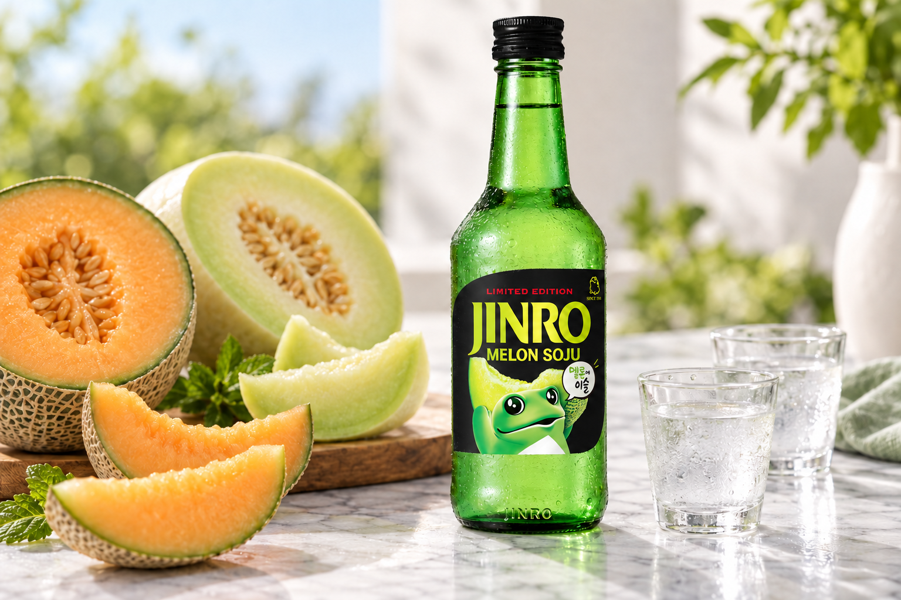
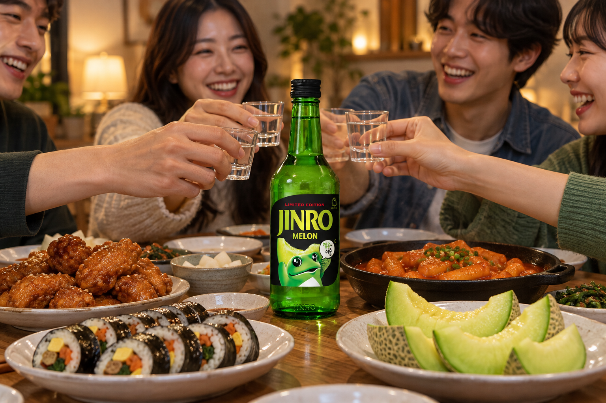
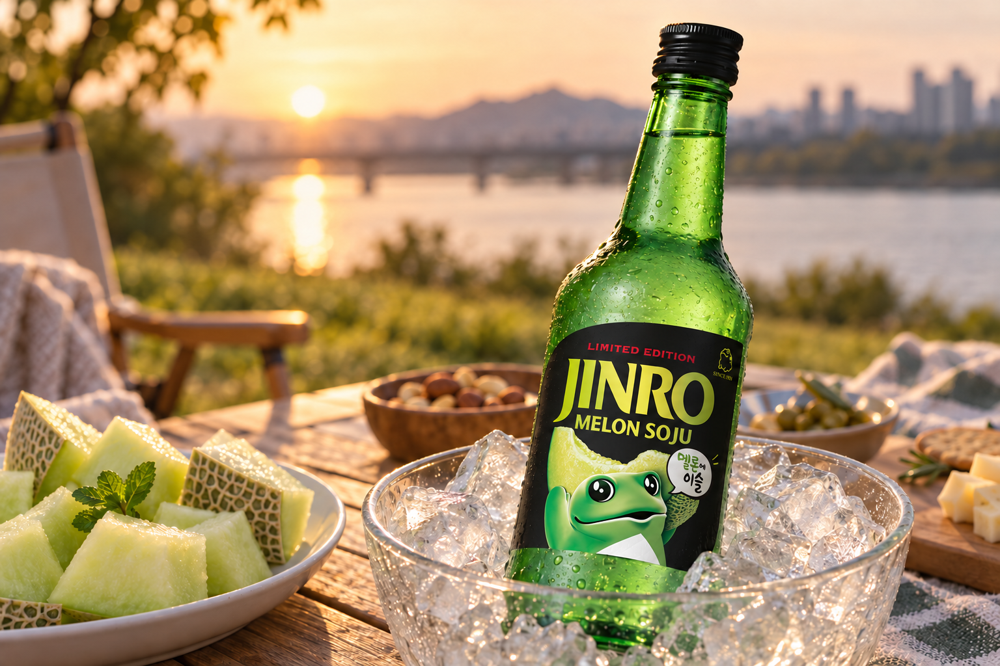

JINRO Melon 正式留下來了：現已加入常態產品線
從限定版起步的哈密瓜口味，現在正式成為 JINRO 水果燒酒產品線的常態成員。
水果燒酒迷的好消息：JINRO Melon 要留下來了。
以下是關於 JINRO Melon 你需要知道的事。

JINRO Melon 喝起來是什麼味道？
JINRO Melon 把哈密瓜的香甜精華融入燒酒之中。哈密瓜風味輕盈、清甜爽口，尾韻乾淨俐落。
如果你是第一次喝水果燒酒，這是很容易入門的口味。如果你已經熟悉 JINRO 的其他水果口味，它也是值得加入清單的新選擇。
從限定版到常態產品線
JINRO Melon 今年春天首度以限定版推出，在美國、日本、越南、澳洲和英國等 20 多個國家上市，也是 JINRO 的第七款水果口味。
如果你在限定期間買過黑色標籤的那一瓶，你已經知道它的味道了。現在不用再擔心它什麼時候會消失。
各國家及各門市的供應情況可能有所不同。

享用 JINRO Melon 的簡單方式
JINRO Melon 適合各種不同的場合。這裡有幾個點子：
和朋友一起：下次聚會帶一瓶去，搭配適合大家分享的韓式料理。
搭配餐點：輕盈的甜味和炸雞、紫菜飯捲或辣炒年糕等鹹香的韓式料理很搭。
悠閒的週末：冰一瓶、切些新鮮哈密瓜，簡簡單單就好。
充分冰鎮後享用，最能喝出清爽的哈密瓜風味。

JINRO 產品線有更多口味可以選
JINRO Melon 加入的水果燒酒產品線，已經有 JINRO Grapefruit、Green Grape、Plum、Strawberry、Peach 和 Lemon。
口味越多，越容易找到適合自己的那一款，也可以依不同場合換著喝。
歡迎 JINRO Melon 加入產品線
已經是粉絲了嗎？你可以繼續享用。還沒喝過嗎？到附近的店家找找 JINRO Melon，挑選你的下一個最愛口味吧。
想探索更多韓國美食故事與 JINRO 搭配，歡迎追蹤 JINRO Global 官方 Instagram、Facebook 和 YouTube。
本文僅供已達法定飲酒年齡的讀者閱讀。請理性、適量享用 JINRO，切勿酒後駕車。